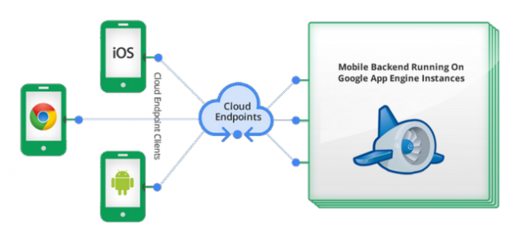
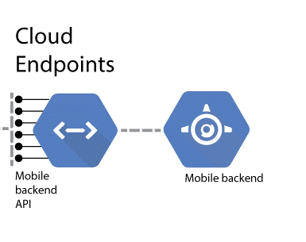
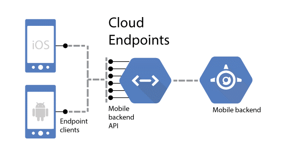

In this activity, you will practice working with REST APIs and databases. You will first create rest endpoints and include the address of your server and also the documentation of your endpoints in your submission. Then, in the next step, you will create a single screen application to use one of your endpoints. You will also share the code for the backend and your frontend using Github.
The submission of the both parts of the activity are due on Nov. 18, 2020.

- You will use Google Cloud platform (or a cloud provider of your choice) for this activity. For using Google Cloud platform, you can create an account and redeem your course credit of 50 $ and add it to your account. The instruction on how to redeem your course credit is available in your course homepage (BlackBoard → Course Information).
- Database - You will create a database with a table that contains a list of courses, e.g., 5 courses of your choice. You will provide REST endpoints that allow users to search, add, and update the table. You may choose to implement this with any of the architectures discussed in the class, deploy your mysql server on Google Compute Engine or on Cloud SQL, or any cloud platform of your choice.
- Each course in the database is represented by a course code, course name, and a description. The description field is optional and can be empty. Other fields are mandatory. For example, a record in your database may look like this: 'COMP3504', ‘Software Engineering', ‘Covers software engineering practices through building a complete application with a front-end and a back-end'.
- REST endpoints - Create three REST endpoints: A) Provide a REST endpoint that allows users to search for courses by their code or name. Implementing one of these options is enough. B) Provide a REST endpoint that allows users to add new courses to the database. C) Provide a REST endpoint that allows users to update the description of a course.
- Test your REST endpoints with Postman and make sure that they work correctly.
- Include the documentation of your REST endpoints in your submission. Your documentation should include the base URL (your server IP and Port), and also the list of your endpoints with the description of what they do and what parameters they need.

- You will create a single screen (one page) front-end application. Call your rest endpoint to add new courses to the list. Remember that the course code and the name are mandatory, but the description is an optional field.
- Test your application with different inputs and make sure it works correctly.
- Remember that if you host your REST endpoints on a server without https setting, you may not be able to call them from a platform like Snack that is hosted with https. You should still be able to call your non-https endpoints from Postman or from your local development environment.

- Share your backend and frontend code by Github (username: Yasaman-A). You may use one Github repository with two separate folders for your backend and frontend code.
- Prepare a list of all your endpoints, and their parameters and descriptions (Similar to the table in page #2 of the "Connect to API from your application" lecture slides). Include this in the readme file of your Github repository. To use your endpoints, I need to know your base URL (e.g., the IP and port of your server). Make sure to include this in your submission.
- The following table includes the marking guideline.
Item | Weight |
All Endpoints are defined properly and they work correctly with the backend database. API for searching a course API for adding a course API for updating a course | 20 20 20 |
API documentation is provided. You may include this in your | 10 |
Front end code is designed properly and it works correctly with the REST endpoints | 20 |
Code for the backend and frontend is submitted | 10 |